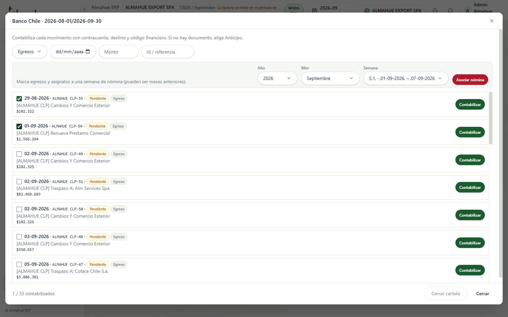
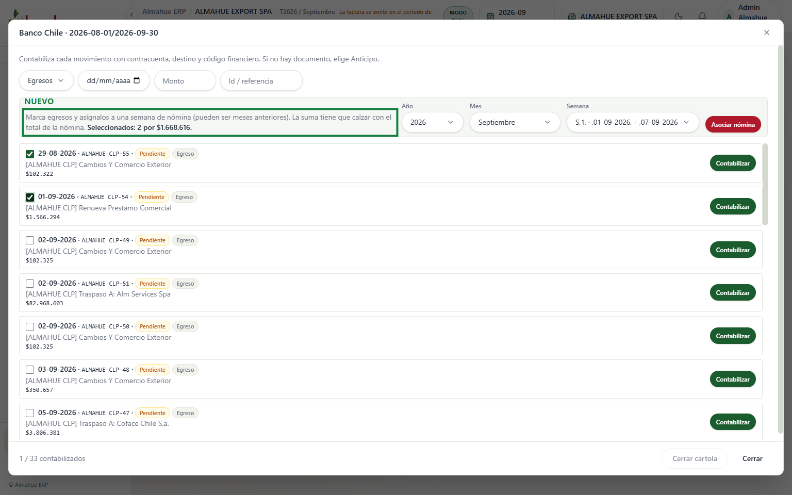
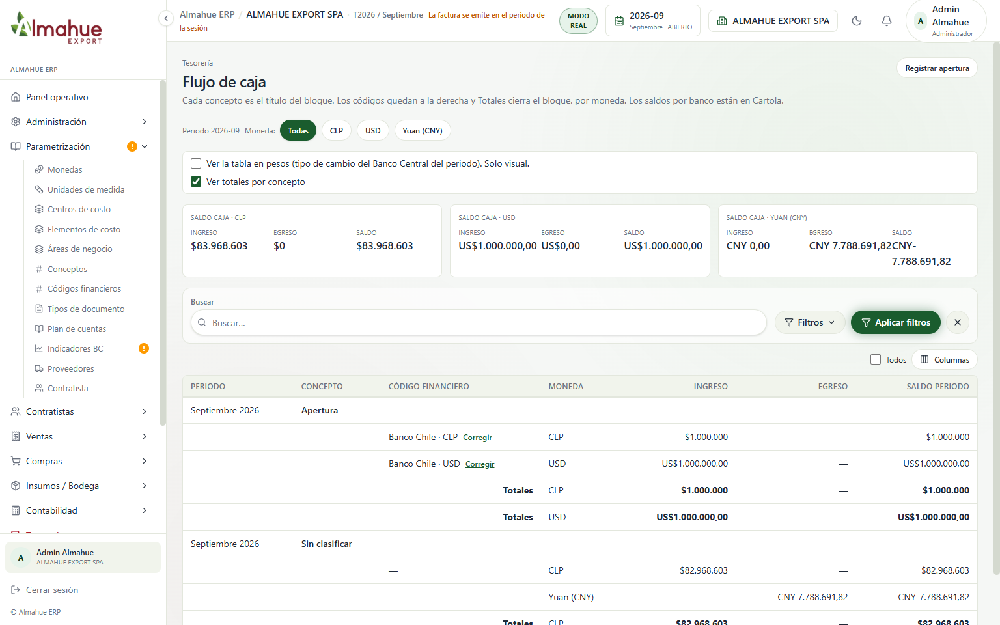
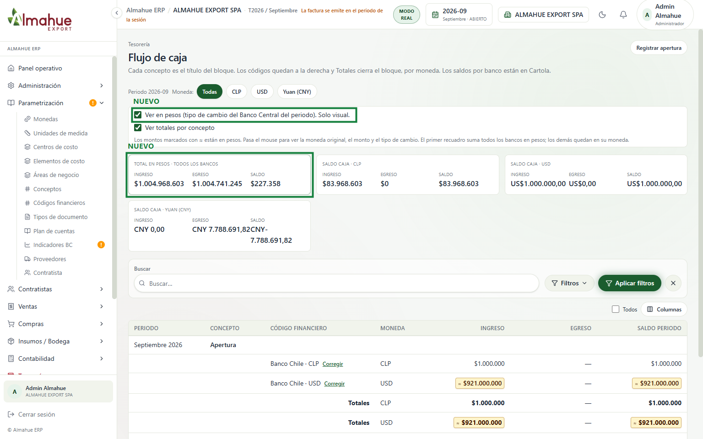
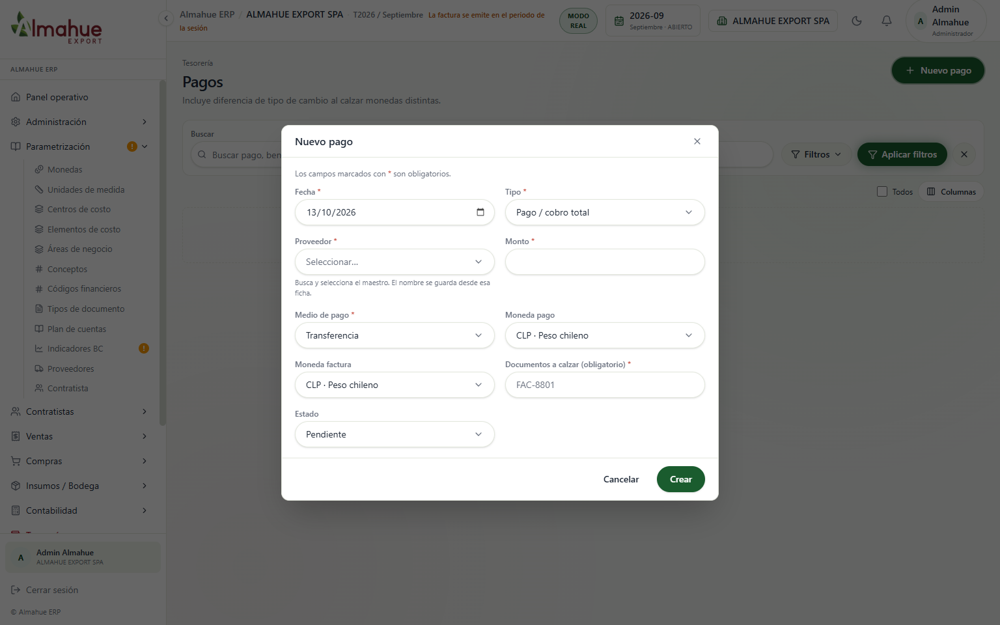
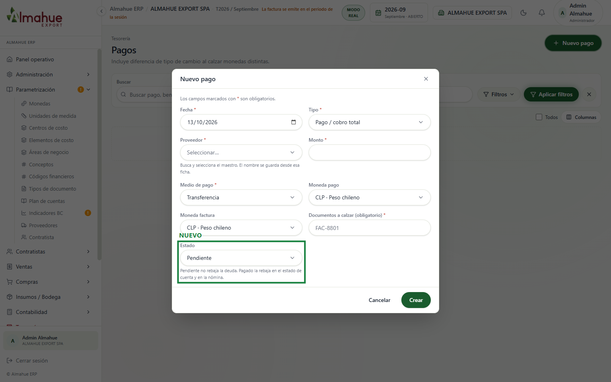

izquierda / derecha: antes y después. + y - : zoom. Esc cierra
ALMAHUE EXPORT SPA, modo real, ERP local del 13/10/2026. Cartolas, Flujo de caja y Pagos se fotografiaron con el periodo de la sesión en 2026-09, porque las cartolas cargadas son de agosto y septiembre. Después el periodo volvió a 2026-10. Nómina, Estado de cuenta y Conciliación están en 2026-10. El recuadro verde y la etiqueta NUEVO están solo en la captura, no en el sistema. Un clic abre la imagen. La rueda o las teclas + y - hacen zoom. Izquierda y derecha cambian entre el antes y el después. Esc cierra.





